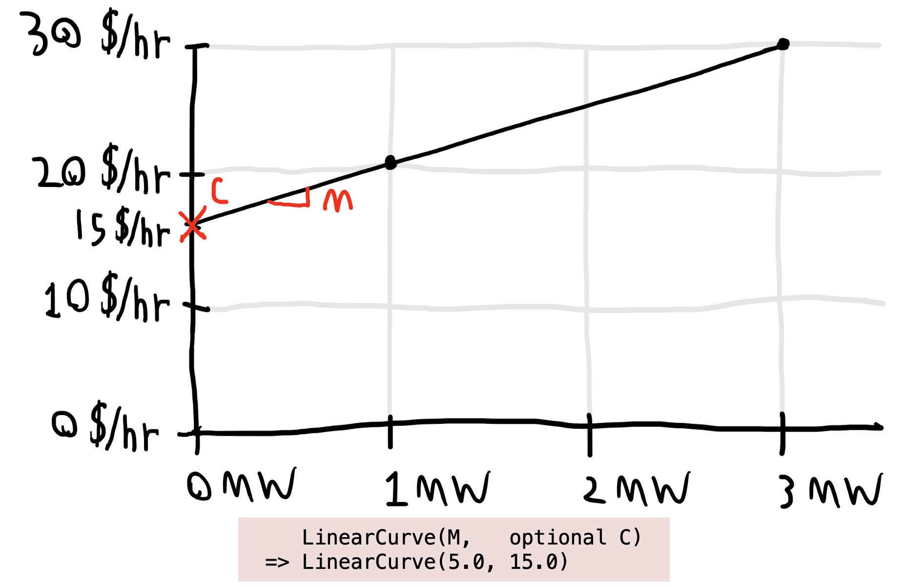
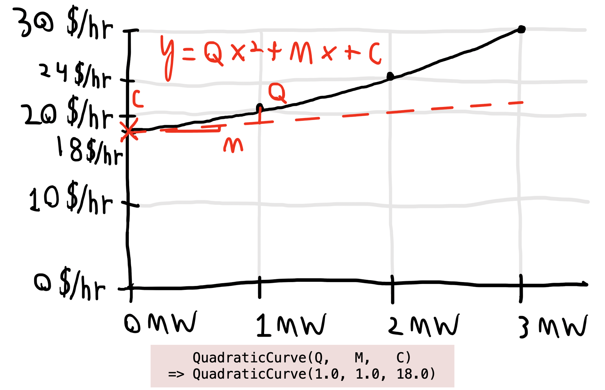
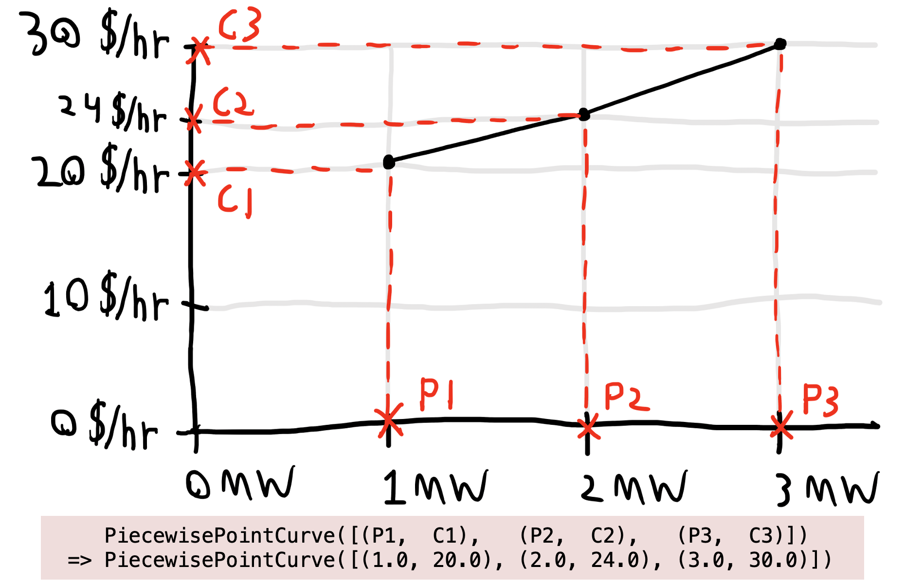
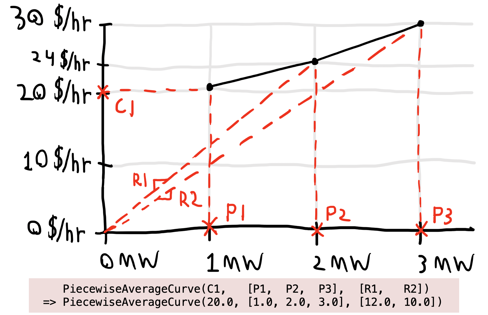

ValueCurve Options
Operating cost data typically includes both fixed and variable costs. See the how-to on Adding an Operating Cost for a demonstration of defining an operating cost.
In PowerSystems.jl, the variable portion of the operating cost can be represented as linear, quadratic, or piecewise input-output curves; potentially piecewise marginal heat rates; average heat rates; and more, as best fits the input data. This is done by constructing various subtypes of ValueCurve.
This summary table shows each way to construct a ValueCurve with the user-friendly subtype aliases. The ValueCurves make no assumption about units; the example interpretation given here assumes that the variable cost ValueCurve will be wrapped in a CostCurve with natural units. Note that all four Piecewise options here fundamentally represent the same curve. More information and explanatory plots are provided for each subtype alias in the subheadings below.
| Description | Example | Example interpretation |
|---|---|---|
| Linear input-output curve with zero no-load cost (constant average rate) | LinearCurve(5.0) | $5/MWh |
| Linear input-output curve with potentially nonzero no-load cost (constant marginal rate) | LinearCurve(5.0, 15.0) | $5/MWh + $15/hr |
| Quadratic input-output curve with potentially nonzero no-load cost | QuadraticCurve(1.0, 1.0, 18.0) | $C(P) = 1 P^2 + 1 P + 18$ where $C$ is $/hr, $P$ is MW |
| Piecewise linear curve specified by cost values at production points | PiecewisePointCurve([(1.0, 20.0), (2.0, 24.0), (3.0, 30.0)]) | $20/hr @ 1 MW, $24/hr @ 2 MW, $30/hr @ 3 MW, linear $/hr interpolation between these points |
| Piecewise linear curve specified by initial value and marginal rates (slopes) between production points | PiecewiseIncrementalCurve(20.0, [1.0, 2.0, 3.0], [4.0, 6.0]) | $20/hr @ 1 MW plus additional $4/MWh from 1 MW to 2 MW plus additional $6/MWh from 2 MW to 3 MW |
| No-load cost plus piecewise linear curve specified by initial value and marginal rates (slopes) between production points | PiecewiseIncrementalCurve(18.0, 20.0, [1.0, 2.0, 3.0], [4.0, 6.0]) | $18/hr no-load cost; $20/hr @ 1 MW plus additional $4/MWh from 1 MW to 2 MW plus additional $6/MWh from 2 MW to 3 MW |
| Piecewise linear curve specified by initial value and average rates between production points | PiecewiseAverageCurve(20.0, [1.0, 2.0, 3.0], [12.0, 10.0]) | $20/hr @ 1 MW, $12/MWh @ 2 MW, $10/MWh @ 3 MW, linear $/hr interpolation between these points |
LinearCurve
Specify the marginal cost of production $M$ and optionally the no-load cost $C$, which defaults to zero. Here is a graphical representation:
QuadraticCurve
Specify the quadratic ($Q$), proportional ($M$), and constant ($C$) terms of a function that defines the input-output curve:
PiecewisePointCurve
Specify a vector of $K$ (production, cost) pairs (i.e., $(P_k, C_k)$ for $k = 1, \dots, K$) to define the input-output curve:
PiecewiseIncrementalCurve
Specify the cost $C_1$ at the least production point given (NOT the cost at zero production), a vector of $K$ production points $P_1, \dots, P_k$, and a vector of $K-1$ marginal rates $M_1, \dots, M_{k-1}$, that represent the slopes of the curve segments between the points. $C_1$ may be nothing, which results in a not-fully-defined curve. The no-load cost $C_0$ can optionally be specified as a first argument; it is not part of the representation of the curve, just another piece of data that may be stored:
PiecewiseAverageCurve
Specify the cost $C_1$ at the least production point given (NOT the cost at zero production), a vector of $K$ production points $P_1, \dots, P_k$, and a vector of $K-1$ average rates $R_1, \dots, R_{k-1}$ at the $K-1$ latter production points:
